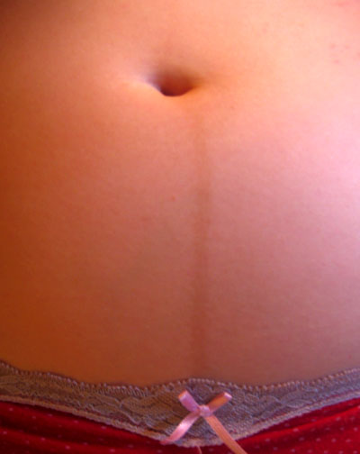

Página 4 · Parte B · Presunção
Presunção: mama, pele e o que a mãe sente
Cloasma, estria, Montgomery, Hunter, Haller, atraso, enjoo, mastalgia — tudo isso continua presunção. A pegadinha da página: a palavra “gravídico” no nome não muda o rótulo.
Atraso, náusea e mastalgia ainda são presunção
Atraso menstrual em mulher de ciclos regulares é informação de presunção de alto valor prático — e ainda assim: presunção, não certeza. Náusea / enjoo (inclusive o clichê da “náusea matinal”) = presunção. Mastalgia / seios doloridos e aumentados = presunção (eixo mama).
(Digressão leve: o clichê “enjoo de novela → você deve estar grávida” é a versão pop da pegadinha desta página — a sugestionabilidade da queixa nunca sobe o degrau.)
Montgomery, Haller e Hunter na mama
Tubérculos de Montgomery = pápulas na aréola por hipertrofia das glândulas sebáceas / glândulas acessórias da aréola. Macete: Montgomery = “tubérculos” na aréola.
Rede venosa de Haller (rede de Haller · trama venosa de Haller) = rede venosa mamária mais evidente por mudança de vascularização; mama maior e mais “marcada”. Haller = trama venosa mamária mais visível.
Sinal de Hunter = surgimento / desenvolvimento da aréola secundária — aréola maior, com segunda zona areolar mais mal delimitada (“alvo”). Macete: Hunter (caçador) = alvo do caçador. Comparação didática útil: mesma paciente em momentos diferentes — aréola menor fora da gestação; maior no início; ainda maior em fase avançada.
Cloasma, linha nigra, estrias: “gravídico” no nome ≠ certeza
Cloasma gravídico, linha nigra, estrias “gravídicas” = presunção, apesar do adjetivo “gravídico” no nome. Nome com “gravídico” ≠ certeza.
É a pegadinha literal da página: a palavra no nome seduz a certeza; a fisiologia não muda. Cloasma, linha nigra e estrias são alterações de pele/sistêmico — ficam em presunção, e o eixo mãe·mama·sistêmico é o teto do rótulo.
Mama não sobe sozinha para probabilidade
Mesmo sendo mama, o eixo mãe · mama · sistêmico permanece presunção — não sobe sozinho para probabilidade. Probabilidade exige o ninho (útero–vagina–vulva).
[PONTE-A15] Náusea, mama e pele como fisiologia adaptativa (por que acontecem) = aprofundamento de modificações maternas. Aqui o papel é rótulo de degrau — não explicação causal.
| Sinal | Onde | Degrau |
|---|---|---|
| atraso menstrual | mãe | presunção |
| náusea / enjoo | sistêmico | presunção |
| mastalgia | mama | presunção |
| Montgomery (tubérculos) | mama | presunção |
| Haller (rede venosa) | mama | presunção |
| Hunter (aréola secundária) | mama | presunção |
| cloasma / linha nigra / estrias | pele (sistêmico) | presunção |

Linha vertical hiperpigmentada no abdômen — presunção, não certeza, por mais que o nome carregue “gravídico” implícito. A regra da casa: a palavra no nome não sobe o degrau.
Linea nigra at 22 weeks of pregnancy. Photo: Jeremy Kemp, 2004. Public domain. Source: https://commons.wikimedia.org/wiki/File:Linea_nigra.jpg
Quiz — fixação
Cloasma “gravídico” classifica-se como:
- Gabarito C. O adjetivo “gravídico” no nome não sobe o degrau — cloasma, linha nigra e estrias ficam em presunção (pele/sistêmico).
- (A) confundir nomenclatura com taxonomia — a palavra não muda o eixo.
- (B) “visível” não é critério de probabilidade — o ninho é o critério.
- (D) o achado entra sim na tríade, no degrau certo.
- Por que cair na A: a palavra “gravídico” seduz a certeza — é a pegadinha literal da página.
Tubérculos de Montgomery correspondem a:
- Gabarito B. Montgomery = tubérculos areolares (glândulas hipertrofiadas); permanece presunção.
- (A) = Haller.
- (C) = Hunter (aréola secundária).
- (D) = Goodell (probabilidade, colo).
- Por que cair na C: Hunter e Montgomery convivem na mama e a banca troca os epônimos; o macete “tubérculos = Montgomery” desfaz a confusão.